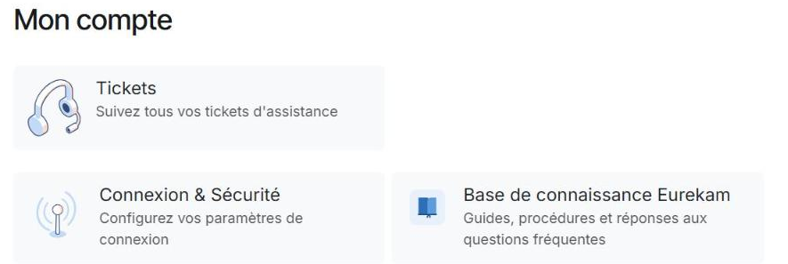
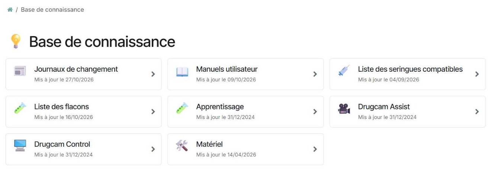
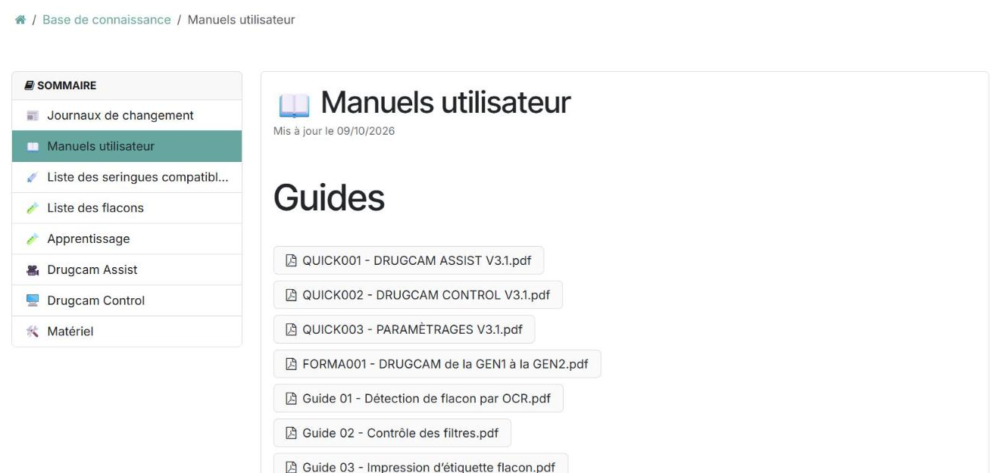
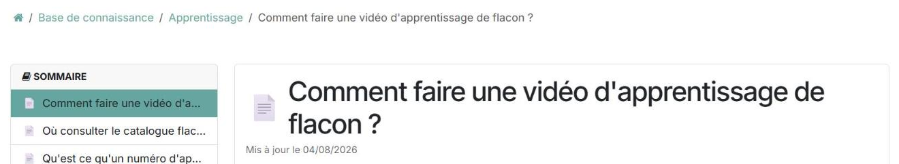
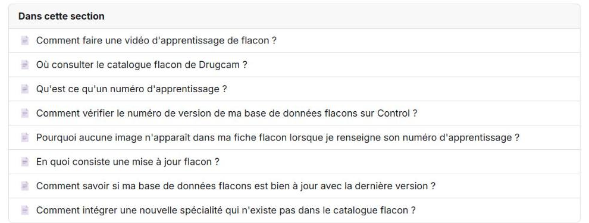
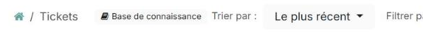
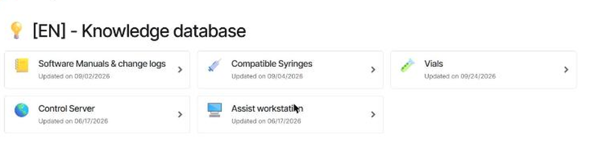
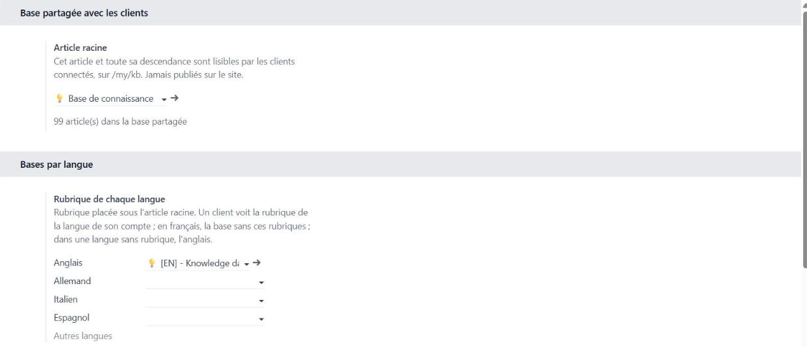
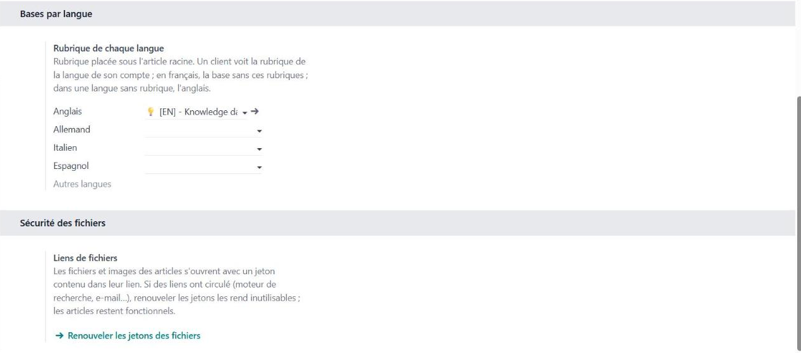

Partager la base de connaissance Eurekam avec nos clients connectés, sans la
rendre publique : ce que voit le client, comment rédiger, comment administrer.
Moduleeurekam_knowledge_portal
Version18.0.1.1.0
Date20 novembre 2026
PublicÉquipe Eurekam
Sommaire
Ce dont nous allons parler.
Le module en brefPourquoi il existe, ce qu'il change
Ce que voit le clientAccès, navigation, manuels, langues, tickets
Rédiger et organiser la baseOù placer les articles, fichiers, liens, publication
Donner accès à un clientCompte portail, langue, invitation
Administrer le moduleParamètres, langues, sécurité des fichiers
Questions fréquentesDépannage et aide-mémoire
Chapitre 01
Le module en bref.
La base de connaissance Eurekam (manuels, journaux de changement, listes de seringues
et de flacons, FAQ) est désormais réservée à nos clients connectés à leur espace client.
Avant / après
Avant
Avec le module
Accès client
Articles publiés sur le site : lisibles par tous, indexés par Google
Lecture réservée aux clients connectés, sur /my/kb
Confidentialité
Partage article par article impossible sans montrer la liste des autres clients (RGPD)
Aucun client ne voit les autres clients ni leurs noms
Rédaction
Dans l'application Connaissances
Inchangée : toujours dans Connaissances
Langues
Une seule base pour tous
Base française pour les comptes en français, rubrique de leur langue (ou anglaise) pour les autres
Fichiers
Liens de fichiers trouvables sur Google
Liens renouvelés, plus indexés
Ce qu'il faut retenir
La base partagée est l'article « Base de connaissance » et tout ce qui se trouve dessous.
On n'y publie plus rien sur le site : Odoo le refuse, c'est voulu.
Les bases partagées nominativement (McKesson, IT HEALTH) fonctionnent comme avant.
Le réglage se fait dans Paramètres → Base de connaissance portail, réservé aux administrateurs.
Chapitre 02
Ce que voit le client.
Le client se connecte avec son compte portail sur le site d'assistance Eurekam, puis
ouvre son espace client.
1. La carte « Base de connaissance Eurekam »
Sur sa page Mon compte (/my), une carte mène à la base de connaissance.

FIG. 01 · Mon compte : la carte « Base de connaissance Eurekam »
2. L'accueil de la base
Les rubriques de premier niveau s'affichent en cartes, avec leur date de dernière mise à jour.

FIG. 02 · /my/kb : les rubriques de la base, pour un compte en français
3. Lire un article et télécharger les manuels
Chaque article affiche à gauche le sommaire de sa rubrique et en haut le fil d'Ariane.
Les fichiers intégrés aux articles (manuels PDF, listes…) apparaissent comme des
boutons de téléchargement.

FIG. 03 · Article « Manuels utilisateur » : un clic télécharge le PDF
4. Naviguer dans les sous-articles

FIG. 04 · Fil d'Ariane : Base de connaissance / Apprentissage / article
En bas d'une rubrique, la liste « Dans cette section » donne accès à ses sous-articles.

FIG. 05 · « Dans cette section » : les sous-articles de la rubrique
5. Depuis ses tickets d'assistance
Sur la liste de ses tickets (/my/tickets), un bouton
Base de connaissance ramène à la base.

FIG. 06 · Le bouton « Base de connaissance » à côté du fil d'Ariane des tickets
6. Selon la langue du compte
Langue du compte client
Ce qu'il voit
Interface
Français
Toute la base, sauf les rubriques de langue ([EN]…)
Français
Anglais
Uniquement la rubrique [EN] - Knowledge database
Anglais
Langue ayant sa rubrique (ex. allemand)
Uniquement sa rubrique
Sa langue
Toute autre langue
La rubrique anglaise (langue de repli)
Anglais

FIG. 07 · Le même accueil pour un compte en anglais
Ce que le client ne voit jamais
Les autres clients, les auteurs des articles, l'historique, les articles hors de la base partagée.
Un article d'une autre langue ou hors base répond « page introuvable ».
Clients McKesson et IT HEALTH
Ils gardent en plus la carte native « Connaissances », qui donne accès à leur base partagée
nominativement. Les autres clients ne voient pas cette carte.
Chapitre 03
Rédiger et organiser la base.
On écrit toujours dans l'application Connaissances, avec l'éditeur habituel.
Seules quelques règles de rangement comptent.
Où placer un article
Pour qu'un client le voie : sous « Base de connaissance », à n'importe quel niveau.
Un article placé ailleurs (racine, espace privé, « Projets internes »…) reste invisible pour les clients.
Les rubriques de langue ([EN] - Knowledge database, et demain [DE]…) doivent rester
sous « Base de connaissance ». Sorties de la base, leurs articles deviennent inaccessibles aux clients.
À éviter
Déplacer une rubrique de langue à la racine de Connaissances : les clients anglophones ne la voient
plus, et le tri par langue se désactive sans prévenir. Pour revenir en arrière, il suffit de la replacer
sous « Base de connaissance ».
Ne plus publier sur le site
Publier sur le site un article de la base est refusé (« … ne peuvent pas être publiés sur le site
web »), y compris en déplaçant dans la base un article déjà publié : c'est le garde-fou qui empêche
la base de redevenir publique.
Fichiers et images
Un fichier inséré avec la commande /fichier apparaît côté client comme un
bouton de téléchargement (FIG. 03) ; les images s'affichent normalement.
Les listes d'articles intégrées ne s'affichent pas côté client : la page liste déjà les sous-articles.
Liens entre articles
Créer un lien avec la commande /article ou l'outil lien en choisissant
l'article : côté client, le lien ouvre l'article dans son espace.
Ne pas coller d'adresse du type /web#id=…,
https://eurekam.odoo.com/… ou de l'ancien
support.eurekam.fr/#knowledge_base/… : ces liens ne fonctionnent pas
pour un client. La liste des liens à corriger est dans
docs/liens-casses-base-connaissance.md.
Bases partagées nominativement
« Mc Kesson Knowledge base » et « IT HEALTH Knowledge base » restent hors de la base partagée et
gardent leur fonctionnement : on y ajoute les membres (collaborateurs, contacts clients) depuis le bouton
Partager de Connaissances. Rappel : dans ce mode, chaque membre voit la liste des autres membres.
Chapitre 04
Donner accès à un client.
Un client lit la base dès qu'il dispose d'un compte portail. Aucun réglage
supplémentaire n'est nécessaire.
Ouvrir la fiche du contact (application Contacts), rattachée à son établissement.
Vérifier le champ Langue : il décide de la partie de la base que verra le client
(français, ou rubrique de sa langue, ou anglais).
Action → Accorder l'accès portail, puis cocher le contact et valider : Odoo envoie
l'invitation par e-mail.
Le client crée son mot de passe, se connecte, puis ouvre la carte « Base de connaissance Eurekam »
depuis Mon compte.
Message type au client
« Notre base de connaissance (manuels, journaux de changement, FAQ) est disponible dans votre espace
client : connectez-vous sur le site d'assistance Eurekam, puis ouvrez Mon compte → Base de
connaissance Eurekam. »
Changer la langue d'un client
Modifier le champ Langue de sa fiche contact. Le changement s'applique à sa prochaine page.
Retirer l'accès
Action → Accorder l'accès portail, puis Révoquer l'accès sur la ligne du contact.
Le client ne peut plus se connecter.
Chapitre 05
Administrer le module.
Tout se règle dans Paramètres → Base de connaissance portail
(administrateurs Odoo, sans mode développeur).

FIG. 08 · Paramètres : article racine et rubriques par langue
Base partagée avec les clients
Article racine : « Base de connaissance ». Lui et toute sa descendance sont partagés.
Le nombre d'articles partagés s'affiche dessous.
Changer d'article racine dépublie la nouvelle base et renouvelle les liens de ses fichiers.
Refusé tant qu'une équipe d'assistance affiche cet article sur le site public.
Vider le champ : plus aucun article n'est exposé (les clients voient « Base de connaissance
indisponible »).
Bases par langue
Pour chaque langue (anglais, allemand, italien, espagnol), choisir la rubrique correspondante parmi les
sous-articles de la base. Laisser vide si la langue n'a pas de rubrique : ses clients verront l'anglais.
Dans Connaissances, créer la rubrique sous « Base de connaissance », par ex.
« [DE] - Wissensdatenbank », et y placer les articles traduits.
Activer la langue si besoin : Paramètres → Langues.
Dans Paramètres → Base de connaissance portail, choisir la rubrique dans le champ de la langue, puis Sauver.
Mettre les clients concernés dans cette langue (chapitre 04).
Autre langue que celles proposées
(néerlandais…) : la déclarer en mode développeur dans le paramètre système
eurekam_knowledge_portal.lang_root_articles, par ex.
en:463, nl:540. Elle apparaît sous « Autres langues » ; l'interface du
client sera en anglais tant que ses libellés ne sont pas ajoutés au module.
Sécurité des fichiers

FIG. 09 · Le bouton « Renouveler les jetons des fichiers »
Les fichiers et images des articles s'ouvrent grâce à un code (jeton) contenu dans leur lien. Si des
liens ont circulé (moteur de recherche, e-mail transféré…), Renouveler les jetons des fichiers
rend tous les anciens liens inutilisables. Les articles continuent de fonctionner ; un client qui avait
enregistré un lien direct devra repasser par la base.
Chapitre 06
Questions fréquentes.
Situation
Explication et solution
Un client ne voit pas un article
L'article n'est pas sous « Base de connaissance », ou il est dans une rubrique d'une autre langue
que celle du client. Le déplacer, ou vérifier la langue de la fiche du client.
Un client anglophone voit la base française
La rubrique [EN] n'est plus sous « Base de connaissance », ou le champ Anglais des paramètres est vide.
« Page introuvable » sur un lien
Le lien vise un article hors de la base ou d'une autre langue, ou un ancien format d'adresse.
Refaire le lien avec /article.
Une image ne s'affiche pas
Image provenant de l'ancien outil de support (support.eurekam.fr/api/…) :
la réinsérer dans l'article depuis le fichier d'origine.
« Ne peuvent pas être publiés sur le site web »
Comportement voulu : la base n'est plus publique. Aucune action à faire.
Le client ne trouve pas la carte
Il n'est pas connecté, ou son compte n'a pas l'accès portail (chapitre 04).
Un ancien lien de fichier envoyé par e-mail ne marche plus
Les jetons ont été renouvelés : renvoyer le client vers l'article dans la base.
Un membre McKesson n'accède plus à sa base
Vérifier qu'il est toujours membre de « Mc Kesson Knowledge base » (bouton Partager) ; il y accède
par la carte « Connaissances ».
Aide-mémoire
Base client
/my/kb · carte « Base de connaissance Eurekam » sur /my
Rédiger
Application Connaissances, sous « Base de connaissance »